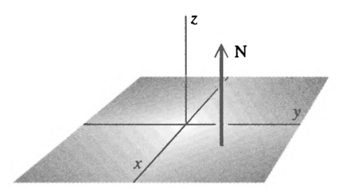

1 Motivation: Gauss' Law
The original electric field expression is cool:
\begin{equation} \vec{E}(\vec{R}) = \frac{1}{4\pi\epsilon_0} \iiint_V \frac{\rho(\vec{r})\hat{u}\vec{r'}}{|\vec{r}-\vec{r}'|^2} dV' \end{equation}but it required the use of a triple-integral over a whole volume of space, per charge, which is very inefficient to compute.
Gauss' Law provides a much more practical solution to the same problem, that:
\begin{equation} \iint_s \vec{E} \cdot \vec{n} dS = \frac{q}{\epsilon_0} \end{equation}This expression involves a "unit normal vector", \(\vec{n}\), as well as a "surface integral" \(\iint_s\) over \(S\). In this chapter, we will explore both of those things.
2 Unit Normal Vector
The normal unit vector is a vector orthogonal to a certain surface. It is likely part of most of the surface integrals we will see.
2.1 Intuition
The intuition of a unit vector orthogonal to a direction is pretty intuitive.
If "to a plane", it is orthogonal to the plane:

If "to a spherical surface", it is a vector in the radial direction to a slice of the surface:

2.2 Formal definition of a Normal Unit Vector
Consider an arbitrary surface \(S\). Construct two noncollinear vector \(\vec{u}\) and \(\vec{u}\) tangent to \(S\) at some point \(P\). Some vector \(\vec{N}\) which is orthogonal to both \(\vec{u}\) and \(\vec{u}\) with also an origin at \(P\) is, by definition, normal to \(S\) at \(P\).

That is:
\begin{equation} \hat{n} = \frac{\vec{N}}{||N||} = \frac{\vec{u}\times \vec{v}}{|\vec{u}\times \vec{v}|} \end{equation}For some \(\vec{u}\), \(\vec{v}\) both tangent to point \(P\).
3 Finding an Expression for \(\hat{n}\)
To find an expression for \(\hat{n}\), we will consider some surface \(S\) by the eqn. \(f(x,y)\). Our goal is to identify some \(\vec{u}\) and \(\vec{v}\) which will yield the result in the needed vector \(\vec{n}\).
We will construct a plane \(P\) perpendicular to the floor, parallel to the \(x\) axis, on \(S\) which is parallel to the \(xz\) plane. The plane will intersect with our surface at some curve \(C\). (This is bit like parameterization.)
Let's take some vector \(\vec{u}\) tangent to \(C\) at \(P\). We will set its projection upon the \(x\) component as, per convention, \(\vec{u}_x\).
We will now have a visual proof for the \(z\) component from the book:

Given some \(\vec{u}_x\), and the function \(f\), we know that multiplying \(\frac{\partial f}{\partial x}\) by \(\vec{u}_x\), will yield \(\partial f\), the change in the \(z\) component. Therefore:
\begin{equation} \vec{u} = \hat{i} \vec{u}_x + \hat{k}\left(\frac{\partial f}{\partial x}\vec{u}_x\right) = \left[\hat{i} + \hat{k}\left(\frac{\partial f}{\partial x}\right)\right]\vec{u}_x \end{equation}Now, we will construct \(v\). The simplest way to do this is to construct another plane \(P'\), but it is now parallel to the \(y\) axis, on \(S\) which is parallel to the \(yz\) plane. It should be trivial to see that, if we construct a vector \(\vec{v}\) from the trace curve \(C'\) of the second plane \(P'\) upon \(S\).
Doing the same thing, we will end up with:
\begin{equation} \vec{v} = \hat{j} \vec{v}_y + \hat{k}\left(\frac{\partial f}{\partial y}\vec{u}_y\right) = \left[\hat{j} + \hat{k}\left(\frac{\partial f}{\partial y}\right)\right]\vec{u}_y \end{equation}And now, we consider their cross product.
| \(\hat{i}\) | \(\hat{j}\) | \(\hat{k}\) | |
| \(\vec{u}\) | \(\vec{u}_x\) | \(0\) | \(\left(\frac{\partial f}{\partial x}\right)\vec{u}_x\) |
| \(\vec{v}\) | \(0\) | \(\vec{u}_y\) | \(\left(\frac{\partial f}{\partial y}\right)\vec{u}_y\) |
The actual work of computing it is left as an exercise to the reader. However, we will get:
\begin{equation} \vec{u} \times \vec{v} = \left[-\hat{i}\left(\frac{\partial f}{\partial x}\right)-\hat{j}\left(\frac{\partial f}{\partial y}\right)+\hat{k}\right] \vec{u}_x\vec{u}_y \end{equation}And so, supplying this equation into the final equation for \(\hat{n}\) in terms of \(\vec{u}\) and \(\vec{v}\), that:
\begin{equation} \hat{n} = \frac{\vec{N}}{||N||} = \frac{\vec{u}\times \vec{v}}{|\vec{u}\times \vec{v}|} \end{equation}we will arrive at:
\begin{equation} \hat{n} = \frac{-\hat{i}\left(\frac{\partial f}{\partial x}\right)-\hat{j}\left(\frac{\partial f}{\partial y}\right)+\hat{k}}{\sqrt{1+\left(\frac{\partial f}{\partial x}\right)^2 + \left(\frac{\partial f}{\partial y}\right)^2}} \end{equation}as the main expression for \(\hat{n}\), the unit normal vector to the surface.
4 Finding an Expression for \(\hat{n}\) at random surfaces
4.1 The \(x,y\) plane
The expression for the \(x\), \(y\) plane is defined as:
\begin{equation} z = f(x,y) = 0 \end{equation}Based on this expression, therefore:
- \(\frac{\partial f}{\partial x} = 0\)
- \(\frac{\partial f}{\partial y} = 0\)
Supplying this expression onto that for \(\hat{n}\), we will arrive at
\begin{equation} \hat{n}_{f(x,y)=0} = \hat{k} \end{equation}Which, obviously, is the vector orthogonal to the \(x,y\) plane.
4.2 A sphere
The expression for a sphere, of radius 1, centered around the origin, is:
\begin{equation} x^2 + y^2 + z^2 = 1 \end{equation}We will then solve the expression w.r.t. \(z\) to get an equation for a half-hemisphere.
\begin{align} &x^2 + y^2 + z^2 = 1 \\ \Rightarrow\ & z^2 = 1 - (x^2 + y^2) \\ \Rightarrow\ & z^2 = 1 - x^2 - y^2 \\ \Rightarrow\ & z = \sqrt{1 - x^2 - y^2} \\ \Rightarrow\ & z = = (1 - x^2 - y^2)^{1/2} \end{align}We can again take the partial derivatives of this expression to supply to the equation to \(\hat{n}\).
\begin{align} \frac{\partial}{\partial x} z &= \frac{\partial}{\partial x} (1-x^2-y^2)^{1/2} \\ &= \frac{-2x}{2(1-x^2-y^2)^{1/2}} \\ &= \frac{-x}{\left[(1-x^2-y^2)^{1/2}\right] = z} \\ &= \frac{-x}{z} \end{align} \begin{align} \frac{\partial}{\partial y} z &= \frac{\partial}{\partial y} (1-x^2-y^2)^{1/2} \\ &= \frac{-2y}{2(1-x^2-y^2)^{1/2}} \\ &= \frac{-y}{\left[(1-x^2-y^2)^{1/2}\right] = z} \\ &= \frac{-y}{z} \end{align}And finally, if we take the expression for the unit normal vector, and replace it with the prescribed values:
\begin{align} \hat{n} &= \frac{-\hat{i}\left(\frac{-x}{z}\right)-\hat{j}\left(\frac{-y}{z}\right)+\hat{k}}{\sqrt{1+\left(\frac{-x}{z}\right)^2 + \left(\frac{-y}{z}\right)^2}} \\ &= \frac{\hat{i}\left(\frac{x}{z}\right)+\hat{j}\left(\frac{y}{z}\right)+\hat{k}}{\sqrt{1+\left(\frac{x^2}{z^2}\right) + \left(\frac{y^2}{z^2}\right)}} \\ \end{align}5 Surface Integrals
Surface integrals are area integrals multiplied of a function multiplied by the unit normal vector of the face that we with to analyses.
\begin{equation} \iint_S \vec{F} \cdot \hat{n}\ dS \end{equation}5.1 Formal Definitions of the Surface Integral
Of course, this statement is saying to project every vector on the surface onto the direction of the unit normal vector on the surface, essentially, therefore:
\begin{equation} \iint_S \vec{F} \cdot \hat{n}\ dS = \lim_{N \to \infty, \Delta S_l \to 0} \vec{F}(x_l,y_l,z_l) \cdot \hat{n}_l \Delta S_l \end{equation}Sometimes, \(\vec{F} \cdot \hat{n}\) is given by a scalar function \(G(x,y,z)\) of the unit value we are trying to measure at point \((x,y,z)\). This will make our surface integral a lot simpler:
\begin{equation} \iint_S G(x,y,z)\ dS \end{equation}Ok but what's the difference between this and a volume double-integral? Look! Look harder! This is a double integral, but the function is over three paramtres. We are going through each portion of the surface, but then only adding the values on the surface. That is:
\begin{equation} \iint_S G(x,y,z)\ dS = \lim_{N \to \infty, \Delta S_l \to 0} G(x_l, y_l, z_l) \Delta S_l \end{equation}5.2 Useful Definition of the Surface Integral
We will now attempt to parse the following expression into something more useful
\begin{equation} \iint_S G(x,y,z)\ dS \end{equation}To actually properly evaluate this, we need to first find a way to project some surface \(\Delta S_l\) to its coordinates on the \((x,y)\) plane to plug into \(G\). This relation we will call \(\Delta S_l \to \Delta R_l\), where \(\Delta R_l\) is the rectangular projection.

Let's do the project with the help of vector \(\hat{n}\) and \(\hat{k}\).

First, it is evident that, given these angles and the idea of projection:
\begin{equation} b' = \cos \theta b \end{equation}Based on the same idea, we have:
\begin{equation} ab' = ab \cos \theta \end{equation}Replacing \(\hat{n}\cdot \vec{k} = \cos{\theta}\) (the definition of a dot product):
\begin{equation} ab = \frac{ab'}{\hat{n}\cdot\vec{k}} \end{equation}And, look here!, we just came up with the definition of \(\Delta R_l\) as we determined above — \(ab' = \Delta R_l\)!
So:
\begin{equation} \Delta S_l = \frac{\Delta R_l}{\hat{n}\cdot\vec{k}} \end{equation}And therefore, we can write the following:
\begin{equation} \iint_S G(x,y,z)\ dS = \lim_{N \to \infty, \Delta R_l \to 0} \sum_{l=1}^N G(x_l,y_l,z_l) \frac{\Delta R_l}{\hat{n}_l \cdot \vec{k}} \end{equation}Hey look—we now have a limit of some integral on \(\Delta R_l\), the two-dimensional area on the cartesian plane: turning this into a good ol' double integral!
And therefore…
\begin{equation} \lim_{N \to \infty, \Delta R_l \to 0} \sum_{l=1}^N G(x_l,y_l,z_l) \frac{\Delta R_l}{\hat{n}_l \cdot \vec{k}} = \iint_R \frac{G(x,y,z)}{\hat{n}(x,y,z) \cdot \vec{k}} dx\ dy \end{equation}As we are modeling a surface, obviously \(f(x,y) = z\). (what's \(G\)? Remember how \(G\) is the value function at various points on the surface.)
Therefore:
\begin{equation} \iint_R \frac{G[x,y,f(x)]}{\hat{n}(x,y,f(x)) \cdot \vec{k}} dx\ dy \end{equation}And now, we expand, because, apparently

We will now remember the definition of \(\hat{n}\), the unit normal vector:
\begin{equation} \hat{n} = \frac{-\hat{i}\left(\frac{\partial f}{\partial x}\right)-\hat{j}\left(\frac{\partial f}{\partial y}\right)+\hat{k}}{\sqrt{1+\left(\frac{\partial f}{\partial x}\right)^2 + \left(\frac{\partial f}{\partial y}\right)^2}} \end{equation}And therefore, the dot product of this and \(\vec{k}\) is:
\begin{equation} \hat{n} \cdot \vec{k} = \frac{1}{\sqrt{1+\left(\frac{\partial f}{\partial x}\right)^2 + \left(\frac{\partial f}{\partial y}\right)^2}} \end{equation}Lastly, substituting this back to our original expression:
\begin{equation} \iint_R G[x,y,f(x,y)] \cdot {\sqrt{1+\left(\frac{\partial f}{\partial x}\right)^2 + \left(\frac{\partial f}{\partial y}\right)^2}} dx\ dy \end{equation}Oh god. However, thinking about this — it kind of makes sense: think! the equation of a line length in \(\mathbb{R}^1\) is basically the surface integral proof above, with \(G(*) = 1\) ("one unit is one unit."). And indeed we do result in the same expression.